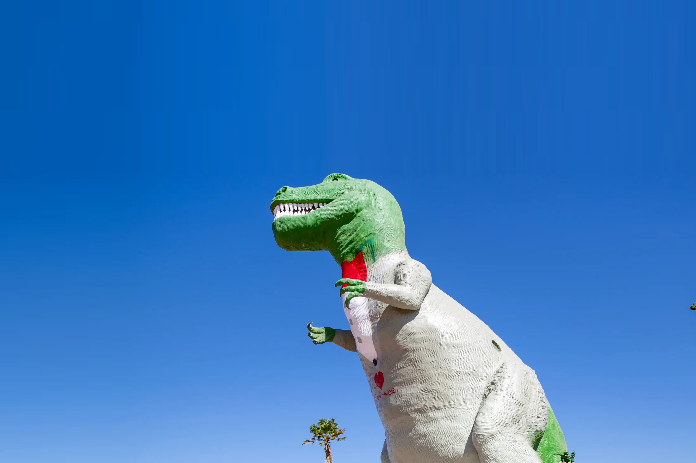

California Trip
The Roadtrip
Early in the summer my mom took me on a trip to go see family in california. I hadn't seen most of the family on that side in a very long time, so this trip would be a refreshing one. We packed up the car with clothes and food, and then started heading towards California. We were going to stop at the Cabazon Dinosaurs, but we were going to be late so we didn't go this time. When we were about 90% of the way there when my mom noticed one of the tires had a very low amount of air pressure. She discovered that the tire had gotten a small nail stuck in it. We knew someone in our family who worked on tires so we filled up on air and hoped it would get us the rest of the way there.
My Family

My mom and I did get there and my uncle helped us with the tire. We were there for my one year old's birthday, even though it was mostly a family get-together. My family made some delicious food, a taco bar with carne asada, chicken, refried beans, and Pico de Gallo. The adults talked about politics and about all of the kids when they were little, while me and the older cousins just played Smash Bros. on the switch. My mom and I were there until around 11PM when we went to another one of my uncles' house. In the morning, he and my aunt made a good breakfast consisting of fried plantains (or platanos), beans, and crema. I had lots of fun in California but after we left I was glad to be back home.